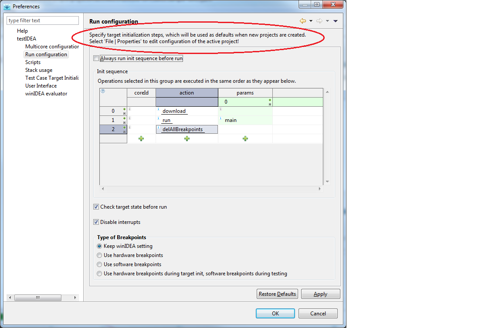

testIDEA and Project Configurations
testIDEA has two sets of options:
- The first set configures behavior of testIDEA, and has no
direct influence on test execution. For example, it controls the help
system and defaults for new projects. This set of options is called Preferences
and is accessible with command
iTools | Preferences.
These options are stored in testIDEA storage and are the same
for all projects opened with testIDEA.
- The second set configures test environment. For example, it
defines target initialization steps before test execution starts.
This set of options is called Properties and is accessible
with command
File | Properties. These options are stored
in project file (*.iyaml), and are specific for each project.
Some pages in Preferences and Properties dialogs are very similar, but
the following rule always applies for these settings:
Preferences are used only when new project is created - they
serve as a starting base. Once the project is created, only Properties
are used.
To make things clearer, the topmost statement on each page
explains the meaning of settings, as shown in the two figures below:
